Психосоматика — это направление на стыке психологии и медицины, изучающее влияние психологических факторов на развитие телесных заболеваний. Для тех, кто хочет освоить методы психотерапии психосоматических расстройств, получить профессиональные навыки и пройти профессиональную переподготовку, мы составили рейтинг программ по психосоматике. В него вошли лучшие дистанционные курсы, где обучение проходит в удобном дистанционном формате. Слушателям доступно дистанционное обучение с возможностью прохождения курсов и получения диплома установленного образца. Программы профессиональной переподготовки включают изучение телесной терапии, диагностики психосоматических симптомов, лечения психосоматических заболеваний и методов практической психологии.
Информация обновлена:
ТОП онлайн-курсов обучения по психосоматике
- 🏆 Психосоматика и телесно-ориентированная терапия – МИП (по промокоду kursy скидка 🎁 10%)
- 🏆 Консультант психосоматического здоровья – УОМ
- 🏆 Психолог-консультант с дополнительной специализацией в области психосоматики и телесной психотерапии – НАДПО (по промокоду onlinekursy действует скидка 🎁 5%)
- Психосоматика и телесная психотерапия: теория, практика – МИПО (по промокоду onlinekursy действует скидка 🎁 10%)
- Психосоматика и телесно-ориентированная терапия – MITM
- Психосоматика и телесная психотерапия: теория, практика – ИПО
- Психолог-консультант с дополнительной специализацией в области психосоматики и телесной психотерапии – НЦРДО (по промокоду onlinekursy действует скидка 🎁 5%)
- Психолог-консультант с дополнительной специализацией в области психосоматики и телесной психотерапии – НИИДПО
- Телесно-ориентированная терапия и работа с психосоматикой – ИППСС
- Психосоматика и телесная психотерапия – ЦАППКК (по промокоду onlinekursy действует скидка 🎁 5%)
- Психосоматика – Учебный центр АПОК
- Психосоматика – Учебный центр ЭКОДПО
- Психосоматика и телесная психотерапия – Учебный центр НЦПО
- Психосоматика. Практические методы и техники – Московский институт психоанализа и Среда обучения
- Психосоматика и телесная психотерапия – НАДПО (по промокоду onlinekursy действует скидка 🎁 5%)
- Психосоматические расстройства функциональных систем организма у взрослых: клиника, диагностика, психотерапевтическая помощь – НИИДПО
- Психосоматика и телесная терапия – Институт психоанализа
- Психотерапия психосоматических расстройств – Институт Современных Психологических Технологий
- Практическая психосоматика – Институт психосоматики и трансформационных методов
Отличительные преимущества каждой дистанционной программы обучения по психосоматике
| № | Название курса и школы | Отличительные преимущества | Ссылка |
|---|---|---|---|
| 🥇 | Психосоматика и телесно-ориентированная терапия МИП | Аккредитация ОППЛ, международный диплом, участие в Центре практики и карьеры | Перейти |
| 🥈 | Консультант психосоматического здоровья УОМ | Карьерный модуль, более 50 инструментов, выбор треков обучения | Перейти |
| 🥉 | Психолог-консультант с доп. специализацией... НАДПО | Доступ к платформе с клиентами, диплом ФГОС, 30% практики с 1 месяца | Перейти |
| 4 | Психосоматика и телесная психотерапия МИПО | Гибкая цена и рассрочка, реальные кейсы, возврат средств 2 недели | Перейти |
| 5 | Психосоматика и телесно-ориентированная терапия МИТУ | Беспроцентная рассрочка, Telegram-чат, работа в тройках | Перейти |
| 6 | Психосоматика и телесная психотерапия ИПО | Удостоверение гос. образца, менторская поддержка, карьерные консультации | Перейти |
| 7 | Психолог-консультант с доп. специализацией... НЦРДО | 15 мес. обучение, 2000 часов, доступ к закрытым сообществам | Перейти |
| 8 | Психолог-консультант с доп. специализацией... НИИДПО | Поддержка продвижения, 13 000+ записей, PR-эксперты | Перейти |
| 9 | Телесно-ориентированная терапия и работа с психосоматикой ИППСС | Мастер-классы, не требуется психологическое образование, 230 часов | Перейти |
| 10 | Психосоматика и телесная психотерапия ЦАППКК | 1020 часов, поддержка HR-наставника, бессрочный доступ | Перейти |
| 11 | Психосоматика АПОК | 1 месяц, диплом с регистрацией, бесплатная доставка | Перейти |
| 12 | Психосоматика ЭКОДПО | 40% скидка, индивидуальный учебный план, 1.5–3 мес. | Перейти |
| 13 | Психосоматика и телесная психотерапия НЦПО | 250–1600 часов, пожизненный доступ, оформление сразу | Перейти |
| 14 | Психосоматика. Практические методы и техники МИП и Среда обучения | Два диплома, поддержка бренда, шаблоны и юрид. сопровождение | Перейти |
| 15 | Психосоматика и телесная психотерапия НАДПО | Книгоклуб, киноклуб, кешбэк, доступ к клиентам | Перейти |
| 16 | Психосоматические расстройства у взрослых НИИДПО | 144 часа, 13 000 вебинаров, мобильное обучение | Перейти |
| 17 | Психосоматика и телесная терапия Институт психологии и соц. образования | 3 мес. обучение, преподаватели с ученой степенью | Перейти |
| 18 | Психотерапия психосоматических расстройств Институт Современных Псих. Технологий | 5 недель, эмоционально-образные методы, разбор мышечных блоков | Перейти |
| 19 | Практическая психосоматика Институт психосоматики и трансформац. методов | 9 мес., доступ к стажировке и команде института, 80% практики | Перейти |
1. 🏆 Психосоматика и телесно-ориентированная терапия — Московский институт психологии
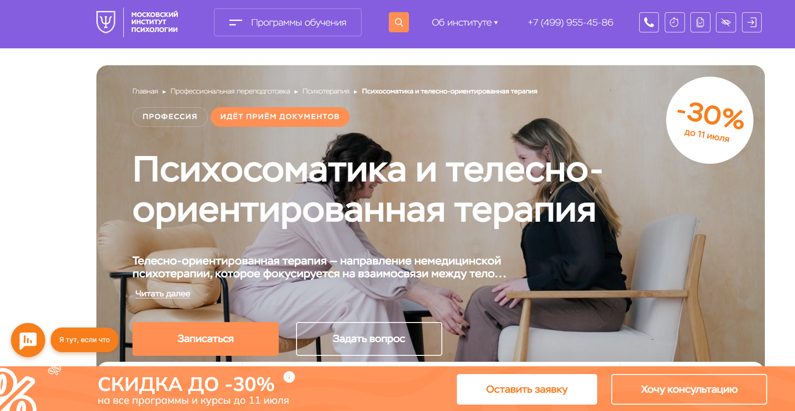- ✅ Официальный сайт: mip.institute
- 💸 Цена: от 150 000 ₽ (со скидкой 30%).
- 💳 Рассрочка: доступна, от 12 500 ₽ в месяц.
- 📚 Формат: дистанционные курсы — видеолекции, домашние задания, тесты, супервизии, вебинары, доступ к библиотеке.
- ⏳ Продолжительность: 8 или 14 месяцев, в зависимости от выбранного тарифа.
- 📜 Документ: диплом о профессиональной переподготовке, международное приложение, удостоверение о повышении квалификации (в пакете "Стандарт").
- 📝 Трудоустройство: участие в Центре практики и карьеры, портфолио, поддержка сообщества.
- 🔷 Для кого подходит курс: для новичков в психологии, желающих освоить телесную терапию, и практикующих специалистов, которым необходимо подтверждение квалификации.
Особенности:
Обучение в дистанционном формате позволяет проходить курс в любом удобном ритме, сочетая теорию и практику. Слушатели получают доступ к демонстрационным сессиям, супервизиям, интервизиям и индивидуальной обратной связи. Программа аккредитована ОППЛ, что подтверждает её профессиональный уровень. Полученные знания и профессиональные навыки позволяют работать с психосоматическими симптомами, использовать методы телесной терапии и проводить частные консультации. Студенты могут применять полученные техники как в личной жизни, так и в профессиональной практике. Онлайн-обучение организовано с применением современной образовательной платформы. Все лекции доступны в записи, что делает процесс обучения гибким.
Чему учатся студенты:
- Анализировать причины психосоматических заболеваний
- Использовать методы телесной психотерапии для снятия стресса
- Работать с телесными симптомами и эмоциональными блоками
- Выявлять психологические причины телесного напряжения
- Развивать навыки саморегуляции и телесного осознавания
- Гармонизировать внутреннее состояние клиента
- Проводить индивидуальные и групповые консультации
Преподаватели:
- Додонова Ирина Викторовна — психолог, специалист в подходах IFS, EMDR, коучинг, писатель, руководитель программы "Психологическое консультирование"
- Валуев Олег Сергеевич — экзистенциальный психолог, автор 150+ научных работ, медиа-аналитик в области информационной безопасности
Преимущества:
- Получение диплома установленного образца с международным признанием
- Гибкий график прохождения обучения
- Поддержка куратора и взаимодействие с профессиональным сообществом
- Доступ к учебным материалам в любое время
- Интенсивная практика и супервизии
- Разнообразие методов и подходов в обучении
- Подходит как для личного развития, так и для профессиональной деятельности
Отзывы учеников:
Студенты отмечают высокий уровень организации дистанционного обучения, удобную платформу, сильный преподавательский состав и насыщенность практическими занятиями. Также подчеркивается возможность обучаться в удобном темпе и получать поддержку в чате с кураторами и коллегами.
Перейти на официальный сайт курса2. 🏆 Консультант психосоматического здоровья — Университет образовательной медицины
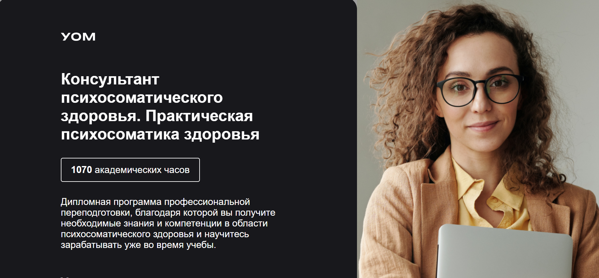
- ✅ Официальный сайт: login.uom.education
- 💸 Цена: 192 000 ₽ (со скидкой — 153 600 ₽)
- 💳 Рассрочка: 7 200 ₽ в месяц на 24 месяца
- 📚 Формат: дистанционное обучение: видеолекции, тесты, практические задания, онлайн-группы, супервизии
- ⏳ Продолжительность: 12 месяцев + 1 месяц аттестации
- 📜 Документ: диплом о профессиональной переподготовке / сертификат (в зависимости от образования)
- 📝 Трудоустройство: карьерный блок, обучение созданию личного бренда, помощь в профессиональной реализации
- 🔷 Для кого подходит курс: врачи, психологи, психотерапевты, студенты, специалисты телесных и помогающих практик
Особенности:
Программа ориентирована на освоение практических навыков диагностики и терапии психосоматических состояний. Упор сделан на дистанционном формате, который позволяет гибко совмещать учебу с работой. Студенты получают доступ к разнообразным учебным материалам и проходят индивидуальные супервизии. В процессе обучения участники могут сразу начать частную практику, получая поддержку от наставников. Образовательный процесс охватывает телесную терапию, современные подходы психотерапии, а также методы работы с психосоматическими симптомами. Гибкая структура курса позволяет самостоятельно выбирать направления обучения и выстраивать свой трек. После завершения обучения выдается диплом, подтверждающий право вести профессиональную деятельность.
Чему учатся студенты:
- Диагностировать психосоматические расстройства и выявлять психологические причины заболеваний
- Применять методы телесной терапии и практической психологии
- Управлять стрессом и восстанавливать внутренние ресурсы
- Работать с ограничивающими убеждениями и негативными эмоциями
- Осваивать технику ведения консультаций и построения терапевтических отношений
- Применять современные методы психотерапии для коррекции психосоматической симптоматики
Преподаватели:
- Дмитрий Занин — кандидат педагогических наук, клинический и нейропсихолог, NLP-тренер, доцент, заведующий лабораторией коучинга
- Ирина Толмачева — клинический психолог, мастер-коуч ICI, арт-терапевт, тренер в области трансперсональной психологии
Преимущества:
- Формат дистанционного обучения с доступом из любой точки мира
- Гибкая структура: выбирайте нужные блоки и темп обучения
- 50+ профессиональных инструментов на реальных кейсах
- Поддержка от кураторов, тьюторов и супервизоров
- Диплом с правом ведения профессиональной деятельности
- Карьерный модуль для развития личного бренда
- Постоянная обратная связь и практическая проработка материала
- Высокая доходимость — более 89% студентов завершают курс
Отзывы учеников:
Студенты отмечают высокое качество учебных материалов, грамотную организацию дистанционного формата и профессиональную поддержку от кураторов. Часто подчеркивается, что обучение помогает не только освоить методы психотерапии, но и начать работать с клиентами уже во время прохождения программы.
Перейти на официальный сайт курса3. 🏆 Психолог-консультант с дополнительной специализацией в области психосоматики и телесной психотерапии – Национальная академия дополнительного профессионального образования
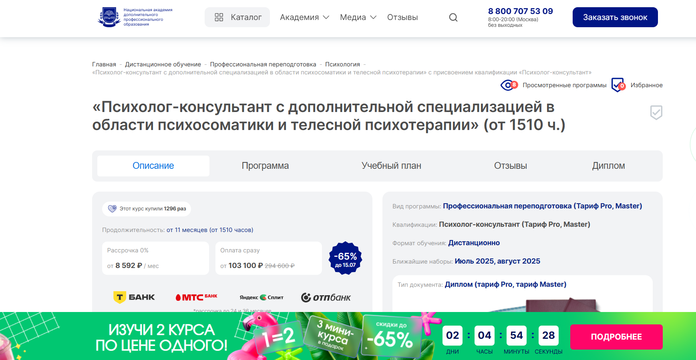
- ✅ Официальный сайт: nadpo.ru
- 💸 Цена: от 103 100 ₽ (со скидкой 65%)
- 💳 Рассрочка: от 8 592 ₽ в месяц, доступна на 24–36 месяцев, 0%
- 📚 Формат: дистанционный формат, видеолекции, тесты, практикумы, супервизии, поддержка преподавателей
- ⏳ Продолжительность: от 11 месяцев (1510 академических часов)
- 📜 Документ: диплом о профессиональной переподготовке, соответствующий ФГОС
- 📝 Трудоустройство: предоставление первых клиентов, карьерные консультации, помощь в открытии частной практики
- 🔷 Для кого подходит курс: для начинающих без опыта, действующих специалистов и тех, кто изучает психосоматику для личного развития
Особенности:
Обучение проходит в дистанционном формате, что дает возможность совмещать профессиональную переподготовку с текущей работой. После окончания курса слушатели получают диплом, действующий на территории РФ. Программа сочетает теоретическую базу и более 30% практических занятий. С первого месяца студенты работают с кейсами и получают навыки консультирования. Также обеспечен доступ к платформе с реальными клиентскими запросами. Используются современные подходы в обучении — телесная терапия, методы осознанности, дыхательные практики и техники саморегуляции.
Чему учатся студенты:
- Диагностике и лечению психосоматических расстройств у взрослых и детей
- Методам телесной психотерапии и психофизиологическим подходам
- Построению эффективных консультативных сессий в онлайн и офлайн-форматах
- Применению телесно-ориентированных техник и работе с эмоциональными зажимами
- Выявлению психосоматических причин заболеваний и коррекции психосоматических симптомов
Преподаватели:
- Зотова Мария Юрьевна — магистр психоаналитического бизнес-консультирования, научный руководитель курса, основатель НАДПО
- Тарасов Сергей Васильевич — кандидат психологических наук, доцент, стаж с 2000 года
- Егорова Наталья Николаевна — кандидат психологических наук, 22 года опыта
- Челнокова Ирина Александровна — кандидат психологических наук, член Российской ассоциации КПТ
- Санжапова Эльмира Викторовна — кандидат педагогических наук, доцент, практикующий специалист с 2005 года
Преимущества:
- Обучение соответствует государственным образовательным стандартам
- Слушатели получают диплом, подтверждающий квалификацию клинического психолога
- Участие в супервизиях и практических воркшопах с момента начала курса
- Бесплатный доступ к библиотекам ЛитРес и Библиоклуб
- Поддержка в построении частной практики и развитии личного бренда
- Обратная связь от преподавателей на всех этапах обучения
- Гарантированная клиентская база через онлайн-платформу психологов
- Гибкий график и дистанционное прохождение курса из любой точки страны
Отзывы учеников:
В интернете студенты положительно отзываются о системном подходе к обучению, отмечают высокую вовлеченность преподавателей и удобную организацию учебного процесса. Особо подчеркивают практическую направленность и возможность начать работать с клиентами до окончания обучения.
Перейти на официальный сайт курса4. Психосоматика и телесная психотерапия: теория, практика – Московский Институт Профессионального Образования
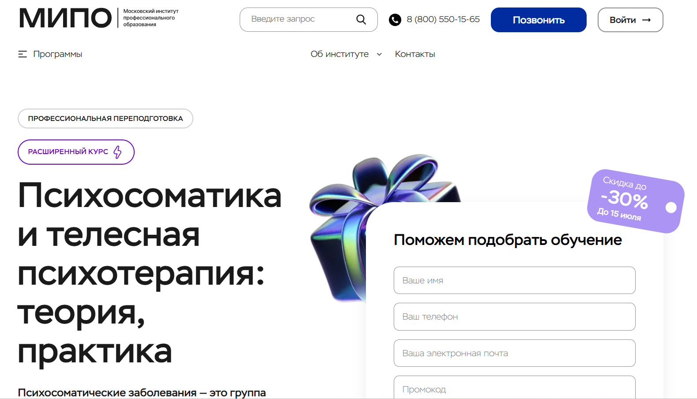
- ✅ Официальный сайт: mipo.msk.ru
- 💸 Цена обучения: от 56 109 ₽ до 90 782 ₽ в зависимости от тарифа (со скидкой до 30%).
- 💳 Рассрочка: доступна до 24 месяцев с ежемесячным платежом от 2 339 ₽.
- 📚 Формат: дистанционное обучение, видеоуроки, вебинары, тесты, домашние задания, кураторская поддержка, доступ к записям занятий, работа с кейсами, дополнительные материалы.
- ⏳ Продолжительность: 5 месяцев (440 часов).
- 📜 Документ: диплом о профессиональной переподготовке с регистрацией в ФИС ФРДО.
- 📝 Трудоустройство: помощь в выборе направления развития, сопровождение ментором, карьерный центр.
- 🔷 Для кого подходит курс: для новичков, желающих сменить профессию, практикующих специалистов, стремящихся подтвердить квалификацию, и тех, кто хочет применять знания для личных целей.
Особенности:
Курс полностью реализован в дистанционном формате с поддержкой кураторов и экспертов. Подходит для тех, кто хочет пройти обучение в гибком темпе, не отрываясь от работы. В программу включены современные подходы телесной терапии и методы психотерапии при психосоматических расстройствах. Студенты участвуют в разборе реальных кейсов, получают обратную связь и практические рекомендации. После окончания курса выдается диплом, зарегистрированный в официальной системе. Возможно оформление налогового вычета, а также возврат средств в течение первых двух недель. Программа адаптирована под запросы начинающих и опытных психологов, а также тех, кто только выбирает свой путь.
Чему учатся студенты:
- Понимать причины истощения нервной системы
- Изучать тревожные расстройства и их профилактику
- Работать с депрессией и аддиктивным поведением
- Осваивать телесную психотерапию и невербальные методы
- Применять краткосрочные подходы в психотерапии
- Вести первые консультации и помогать клиенту справляться с психосоматическими симптомами
Преподаватели:
- Урывчикова Татьяна Геннадьевна — клинический психолог, нейропсихолог, член Ассоциации КПТ
- Перемолотова Ирина Александровна — арт-терапевт, коуч ICI, практикующий психолог
- Цяпало Анна — психоаналитический коуч, сертифицированный сексотерапевт
- Миркина Елена — президент Фонда развития потенциала, клинический психолог
- Сальникова Дарья — научный сотрудник РАО, специальный психолог
- Балобанов Василий — семейный консультант, автор обучающей методики, эксперт 1 канала
Преимущества:
- Формат дистанционного обучения с доступом к онлайн-лекциям и записям
- Поддержка персонального ментора и методиста
- Выдаётся официальный диплом, котирующийся в РФ и за рубежом
- Гибкое расписание — обучение можно совмещать с работой
- Реальные кейсы и практические задания от опытных экспертов
- Скидки до 30% и возможность рассрочки
- Подходит для личного развития и профессиональной практики
- Знания применимы в работе, отношениях и самопомощи
Отзывы учеников:
Слушатели отмечают доступную подачу материала, компетентных преподавателей и качественную техническую поддержку. Особенно ценится формат дистанционного обучения, который позволяет совмещать учёбу с другими делами. Многие выделяют практическую направленность и глубокую проработку тем, связанных с психосоматическими расстройствами и методами терапии.
Перейти на официальный сайт курса5. Психосоматика и телесно-ориентированная терапия – Московский институт технологий и управления
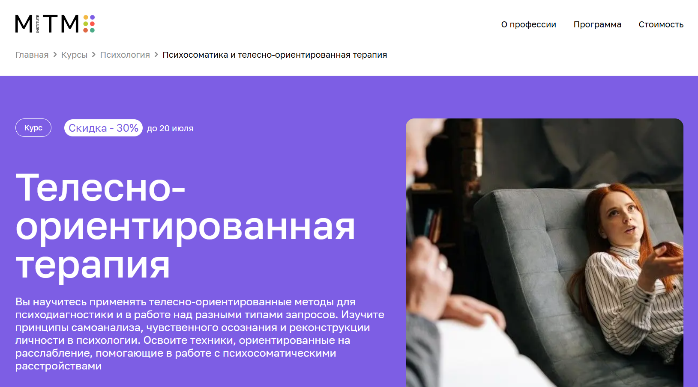- ✅ Официальный сайт: mitm.institute
- 💸 Цена обучения: 157 080 ₽ (со скидкой - 110 040 ₽)
- 💳 Рассрочка: 13 090 ₽/мес (со скидкой — 9 170 ₽/мес) беспроцентная рассрочка на 12 месяцев
- 📚 Формат: дистанционный формат, видеолекции, практикумы, супервизия, домашние задания, Telegram-чат с менторами
- ⏳ Продолжительность: 1 год (1500 академических часов)
- 📜 Документ: диплом о профессиональной переподготовке государственного образца
- 📝 Трудоустройство: диплом вносится в ФРДО, дает право на ведение частной практики
- 🔷 Для кого подходит курс: для психологов, врачей, начинающих в профессии, специалистов по психотерапии и всех, кто интересуется телесной психосоматикой
Особенности:
Курс дает возможность получить профессиональное образование в сфере телесной терапии через дистанционные образовательные форматы. Участники осваивают современные методы диагностики и помощи при психосоматических расстройствах. Обучение адаптировано под работающих слушателей, расписание гибкое, предусмотрена постоянная поддержка куратора. Формат полностью онлайн, без необходимости личного присутствия. По окончании выдается официальный диплом о переподготовке, позволяющий работать в клинической психологии или начать новую карьеру. Программа сбалансирована по теории и практике, что важно для получения реальных профессиональных навыков. Участники курса получают доступ к видеоматериалам, могут смотреть лекции в любое время и проходить обучение в удобном темпе. Курс также предусматривает супервизию и работу в тройках, что обеспечивает развитие практического опыта.
Чему учатся студенты:
- Применять телесные методы психотерапии в практике
- Диагностировать психосоматические причины заболеваний
- Составлять план терапии с учетом состояния клиента
- Работать с запросами: стресс, мигрени, осанка, отношения, саморегуляция
- Понимать границы профессиональной компетенции
- Анализировать реакции тела и психики клиента
Преподаватели:
- Анна Лодзь — практикующий психолог, супервизор, эксперт по телесной терапии
- Сергей Лежава — телесно-ориентированный терапевт, автор обучающих программ
- Мария Лагожина — клинический психолог, преподаватель практикумов по психосоматике
Преимущества:
- Обучение в дистанционном формате без отрыва от работы
- Доступ к лекциям и материалам в личном кабинете 24/7
- Сопровождение куратора на всем пути прохождения курса
- Формирование практических навыков и глубокое понимание психосоматики
- Программа адаптирована под требования работодателей
- Возможность изучения телесной терапии с нуля
- Гибкий график и удобный процесс обучения
- 13% возврат стоимости через налоговый вычет
Отзывы учеников:
Студенты отмечают качественную подачу материала, насыщенность практикой и обратную связь от преподавателей. Среди главных плюсов — удобство дистанционного обучения, официальные дипломы и возможность сменить профессию. Особо выделяют полезность Telegram-чата, где можно задать вопросы менторам и получить поддержку.
Перейти на официальный сайт курса6. Психосоматика и телесная психотерапия: теория, практика – Институт Профессионального Образования
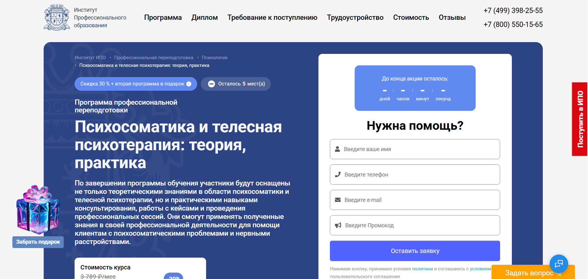
- ✅ Официальный сайт: ipo.msk.ru
- 💸 Цена: от 63 669 ₽ (со скидкой 30%)
- 💳 Рассрочка: от 2 652 ₽/мес до 24 месяцев без переплаты
- 📚 Формат: дистанционный формат — видеолекции, практические задания, тесты, онлайн-сессии, менторская поддержка
- ⏳ Продолжительность: 5 месяцев (440 часов)
- 📜 Документ: диплом о профессиональной переподготовке установленного образца
- 📝 Трудоустройство: карьерные консультации, помощь в подготовке резюме и продвижении на рынке труда
- 🔷 Для кого подходит курс: для начинающих и практикующих психологов, педагогов, социальных работников, желающих работать с психосоматическими симптомами
Особенности:
Курс в дистанционном формате позволяет осваивать знания в любом удобном ритме, совмещая обучение с работой. В рамках программы слушатели получат фундаментальные знания по психотерапии психосоматических расстройств, освоят телесные техники и научатся работать с телесными симптомами. Образовательный процесс сопровождается онлайн-встречами, практикой и поддержкой менторов. Важная особенность — получение не только теории, но и прикладных профессиональных навыков, применимых в реальной практике. Программа помогает участникам проходить обучение, развивая способность работать с клиентами, испытывающими психосоматическое заболевание, тревожные состояния и стресс. После окончания курса выдается диплом, который дает право на консультирование по всей территории РФ.
Чему учатся студенты:
- Диагностике психосоматических симптомов и выбору соответствующей терапии
- Использованию телесной терапии и дыхательных техник
- Работе с зажимами, блоками и телесной осознанностью
- Психологическому сопровождению при хронических расстройствах
- Интеграции телесного и психоэмоционального подхода
- Проведению профессиональных консультаций и сессий
Преподаватели:
- Татьяна Геннадьевна Урывчикова — нейропсихолог, клинический психолог, преподаватель, член Ассоциации когнитивно-поведенческой психотерапии
- Юлианна Евгеньевна Койфман — психолог в социальной сфере, тренинг-менеджер
- Наталья Викторовна Рыбальченко — профессиональный психолог, преподаватель философии
Преимущества:
- Обучение в электронном формате с бессрочным доступом к материалам
- Выдается диплом государственного образца
- Гибкий график и онлайн-платформа с удобным интерфейсом
- Практические задания с проверкой и обратной связью
- Менторство и поддержка профессионалов на каждом этапе
- Подходит для слушателей с высшим и средним профессиональным образованием
- Доступ к закрытому сообществу психологов и преподавателей
Отзывы учеников:
Студенты высоко оценивают качество учебных материалов, разнообразие форматов обучения и поддержку кураторов. Отмечается удобство дистанционного обучения, актуальность знаний, доступ к практическим занятиям и полезность обратной связи. Многие выделяют, что после окончания обучения смогли применять навыки в работе и консультировать клиентов с психосоматическими проблемами.
Перейти на официальный сайт курса7. Психолог-консультант с дополнительной специализацией в области психосоматики и телесной психотерапии – Национальный центральный институт развития дополнительного образования
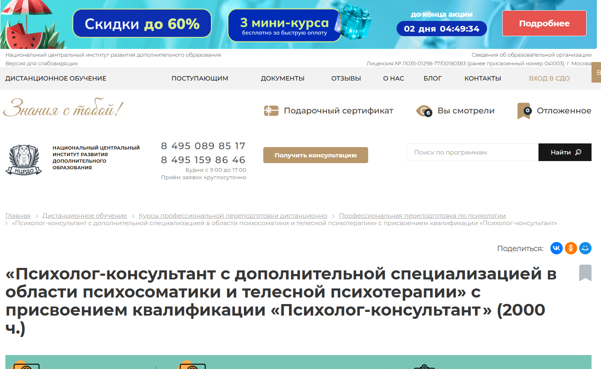
- ✅ Официальный сайт: ncrdo.ru
- 💸 Цена: 90 000 ₽ (полная стоимость — 163 000 ₽)
- 💳 Рассрочка: 2 500 ₽ в месяц на 36 месяцев или от института
- 📚 Формат: дистанционное обучение, онлайн-занятия, тесты, аудиолекции, вебинары, домашние задания, практические сессии
- ⏳ Продолжительность: 15 месяцев (2000 часов)
- 📜 Документ: диплом о профессиональной переподготовке с регистрацией в федеральном реестре
- 📝 Трудоустройство: консультации по карьерному росту, поддержка выпускников
- 🔷 Для кого подходит курс: для специалистов с высшим или средним профессиональным образованием в сфере психологии, медицины, педагогики, студентов и желающих освоить профессию клинического психолога
Особенности:
Курс сочетает теорию и практику в дистанционном формате. Программа разработана для освоения телесной терапии и диагностики психосоматических симптомов. Обучение можно совмещать с работой или учебой. Все учебные материалы доступны онлайн, включая методички, аудиолекции и электронные книги. Курсовые задания ориентированы на реальные ситуации из практики психолога. Слушателям предоставляется доступ к закрытым сообществам и HR-консультациям. По завершении курса выдается диплом с регистрацией в федеральной информационной системе. Студенты проходят практикум, где учатся решать психосоматические проблемы клиентов. Формат обучения позволяет заниматься в любое удобное время.
Чему учатся студенты:
- Изучают психосоматические расстройства у детей и взрослых
- Осваивают методы телесной психотерапии и диагностики
- Разбираются в причинах психосоматических заболеваний
- Проходят практикум по телесной терапии
- Изучают психофизиологические и психодинамические подходы
- Знакомятся с психологическим консультированием в дистанционном формате
Преподаватели:
- Мельникова Елена Васильевна — опыт с 2010 года
- Тышкевич Марина Юрьевна — опыт с 2006 года
- Шевченко Дария Игоревна — опыт с 2018 года
- Салихова Мария Романовна — опыт с 2007 года
Преимущества:
- Обучение в удобном дистанционном формате
- Возможность изучать материалы в любое время
- Доступ к профессиональному сообществу и форуму
- Поддержка карьерного роста выпускников
- Возможность проходить обучение без отрыва от работы
- HR-консультации и помощь в трудоустройстве
- Бесплатный доступ к библиотекам ЛитРес и Библиоклуб
- Участие в практических вебинарах и групповых консультациях
Отзывы учеников:
Слушатели отмечают понятную подачу материала, квалифицированных преподавателей и насыщенную программу. Часто выделяют удобный дистанционный формат, доступность материалов и возможность применять знания на практике уже в ходе обучения. Высоко оценивают систему обратной связи и качество учебных материалов.
Перейти на официальный сайт курса8. Психолог-консультант с дополнительной специализацией в области психосоматики и телесной психотерапии — АНО «НИИДПО»
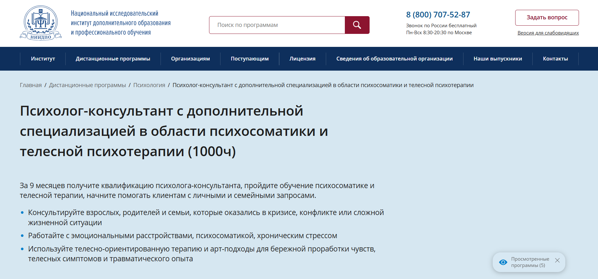
- ✅ Официальный сайт: niidpo.ru
- 💸 Цена: 48 500 ₽ (скидка 7 300 ₽)
- 💳 Рассрочка: 0% на 12 месяцев от 4650 ₽/мес, без первоначального взноса, доступна через Яндекс PAY
- 📚 Формат: дистанционный формат: электронные лекции, тесты, практические задания, видеоуроки, вебинары, доступ к 13000+ записям
- ⏳ Продолжительность: 43 недели (10 месяцев)
- 📜 Документ: диплом о профессиональной переподготовке установленного образца
- 📝 Трудоустройство: карьерный центр, поддержка PR-экспертов, помощь с продвижением
- 🔷 Для кого подходит курс: для начинающих психологов, специалистов в сфере здоровья, социальных работников, HR-менеджеров, интересующихся психосоматическими заболеваниями и телесной терапией
Особенности:
Программа разработана по профстандарту «Психолог-консультант» и направлена на развитие навыков в сфере психотерапии психосоматических расстройств. Обучение проходит полностью в дистанционном формате, что удобно для тех, кто совмещает профессиональную деятельность с освоением новой профессии. Студенты изучают психосоматические симптомы, учатся использовать телесную психотерапию и методы арт-терапии, осваивают дыхательные практики и техники работы с телом. Курс включает блоки по детской и репродуктивной психосоматике. Образовательный процесс сопровождается поддержкой экспертов, супервизиями и доступом к закрытым ресурсам. После окончания обучения выдается диплом, действующий по всей России.
Чему учатся студенты:
- Диагностике психосоматических проявлений и эмоциональных состояний
- Связи между телесными симптомами и психологическими причинами
- Применению телесной терапии, арт-подходов и дыхательных практик
- Работе с семейными и индивидуальными запросами
- Составлению рекомендаций по стабилизации состояния
- Консультированию родителей по вопросам детской психосоматики
Преподаватели:
- Богданова Наталья Александровна — кандидат психологических наук
- Колиниченко Ирина Александровна — кандидат психологических наук, доцент, практический психолог, специалист в области социальной психологии
- Семенова Наталья Александровна — кандидат психологических наук
Преимущества:
- Доступ к обучающим материалам навсегда после окончания курса
- Вебинары и супервизии с выдачей сертификатов
- Поддержка в старте частной практики и продвижении услуг
- Актуальные вакансии и рекомендации по построению карьеры
- Возможность проходить профессиональную переподготовку без поездок в учебный центр
- Легкое оформление через онлайн-заявку
- Подходит для переквалификации без опыта в психологии
- Доступ к закрытым сообществам и библиотекам
Отзывы учеников:
Слушатели отмечают доступность электронного обучения, глубокую проработку темы психосоматики и высокий уровень обратной связи от преподавателей. Среди главных плюсов: понятный учебный процесс, удобный график, насыщенный практический блок и профессионализм команды института.
Перейти на официальный сайт курса9. Телесно-ориентированная терапия и работа с психосоматикой – Институт прикладной психологии в социальной сфере
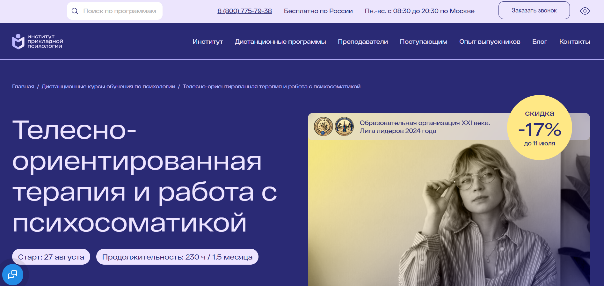
- ✅ Официальный сайт: ippss.ru
- 💸 Цена: 26 500 ₽ (скидка 17%, полная стоимость — 31 800 ₽)
- 💳 Рассрочка: есть возможность оформить налоговый вычет 13%
- 📚 Формат: дистанционные курсы, видеолекции, текстовые лекции, домашние задания, тесты, мастер-классы, вебинары, консультации
- ⏳ Продолжительность: 2 месяца / 230 академических часов
- 📜 Документ: удостоверение о повышении квалификации с регистрацией в ФИС ФРДО
- 📝 Трудоустройство: курс позволяет официально работать по профстандарту "Психолог в социальной сфере"
- 🔷 Для кого подходит курс: для специалистов с профессиональным образованием, студентов, практикующих психологов, желающих освоить методы телесной терапии
Особенности:
Обучение проводится полностью в дистанционном формате с доступом к материалам 24/7. Студенты осваивают телесную психотерапию и методы лечения психосоматических расстройств на практике. Программа разработана по стандартам ФГОС и подходит для дополнительного профессионального образования. После окончания обучения слушатели получают удостоверение, дающее право официальной практики. Каждый участник проходит групповые мастер-классы с экспертами, получает индивидуальные задания с проверкой, участвует в консультациях и имеет доступ к архиву из более чем 10 000 записей. Поддержка действует в течение курса и 3 месяцев после выпуска.
Чему учатся студенты:
- Пониманию механизмов психосоматических заболеваний
- Применению методов телесной психотерапии
- Работе с запросами: стресс, лишний вес, депрессия, неврозы
- Выстраиванию терапевтической практики с клиентами
- Разработке индивидуальных программ помощи
- Применению техник телесной терапии в разных направлениях психологии
Преподаватели:
- Губарева Наталья Владимировна — практикующий медицинский психолог, специалист в области семейного и индивидуального консультирования
- Леонова Светлана Юрьевна — преподаватель ВУЗа, клинический психолог, аналитик, психолог-сексолог
Преимущества:
- Обучение полностью дистанционное, подходит под любой график
- Не требует высшего психологического образования для поступления
- Материалы остаются у студентов навсегда
- Участие в вебинарах с экспертами и получение сертификатов
- Поддержка кураторов и преподавателей в чате и на консультациях
- Официальное удостоверение, действующее по всей России
- Доступ к библиотеке с 2000+ записей психологических техник
- Создание профессионального сообщества выпускников
Отзывы учеников:
Слушатели отмечают высокий профессионализм преподавателей, удобный дистанционный формат и доступность подачи материала. Особо выделяют возможность смотреть лекции в записи, получать обратную связь и участвовать в мастер-классах. Курсы хвалят за практическую направленность и полезность в реальной работе с клиентами.
Перейти на официальный сайт курса10. Психосоматика и телесная психотерапия – Центральная академия профессиональной переподготовки и повышения квалификации кадров
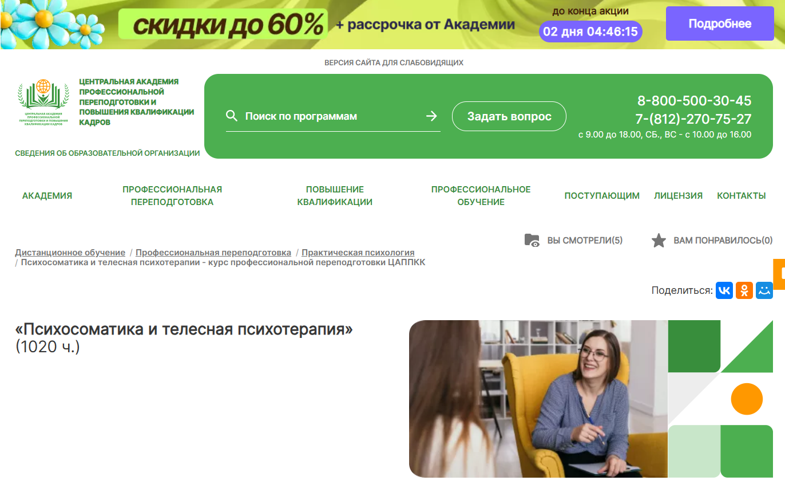
- ✅ Официальный сайт: appkk.ru
- 💸 Цена: 41 000 ₽ (скидка 33% от полной стоимости 60 900 ₽)
- 💳 Рассрочка: от 1 139 ₽/мес. на срок до 36 месяцев
- 📚 Формат: дистанционный формат с применением дистанционных образовательных технологий: видеоуроки, вебинары, аудиолекции, тесты, задания
- ⏳ Продолжительность: 7 месяцев (1020 часов)
- 📜 Документ: диплом о профессиональной переподготовке, внесённый в ФИС ФРДО
- 📝 Трудоустройство: поддержка HR-наставника, помощь в составлении резюме, рассылка вакансий
- 🔷 Для кого подходит курс: психологам, психотерапевтам, студентам с профильным образованием, медикам, заинтересованным в телесной терапии и психосоматике
Особенности:
Курс направлен на развитие профессиональных навыков в области телесной психотерапии и работы с психосоматическими расстройствами. Обучение проводится в дистанционном формате, позволяя совмещать учебу с работой. Материалы курса доступны круглосуточно, включая аудиолекции и библиотеку вебинаров. Документы о прохождении курсов проходят регистрацию в официальных реестрах. Слушателям предоставляется бессрочный доступ к учебной платформе и возможность сохранить материалы на устройство. Поддержка оказывается ежедневно с 9:00 до 21:00. Академия помогает студентам развиваться в сфере практической психологии и предлагает инструменты карьерного роста после завершения обучения.
Чему учатся студенты:
- Определять психологические причины заболеваний внутренних органов
- Применять методы телесной терапии в психотерапевтической практике
- Корректировать эмоциональное состояние клиента
- Анализировать проявления психосоматических симптомов
- Работать с психосоматической проблемой в индивидуальном подходе
- Использовать современные методы дистанционного обучения
Преподаватели:
- Куратор курса — специалист с опытом в области телесной терапии и практической психологии (данные не указаны на сайте)
Преимущества:
- Бессрочный доступ к электронным материалам после завершения обучения
- Поддержка без выходных и удобный график занятий
- Регистрация дипломов в ФИС ФРДО
- Доступ к онлайн-библиотеке и вебинарам
- Подходит как для практикующих специалистов, так и для студентов
- Доступная стоимость курса и возможность оплаты частями
- Возможность совмещать прохождение курсов с основной деятельностью
- Гибкий дистанционный формат обучения
Отзывы учеников:
Студенты положительно оценивают доступность материалов, качественную обратную связь, а также удобство дистанционного формата. Часто упоминают, что получили полезные знания по психосоматическим заболеваниям и телесной терапии. Отмечается высокая актуальность информации и профессионализм преподавателей.
Перейти на официальный сайт курса11. Психосоматика – Учебный центр АПОК
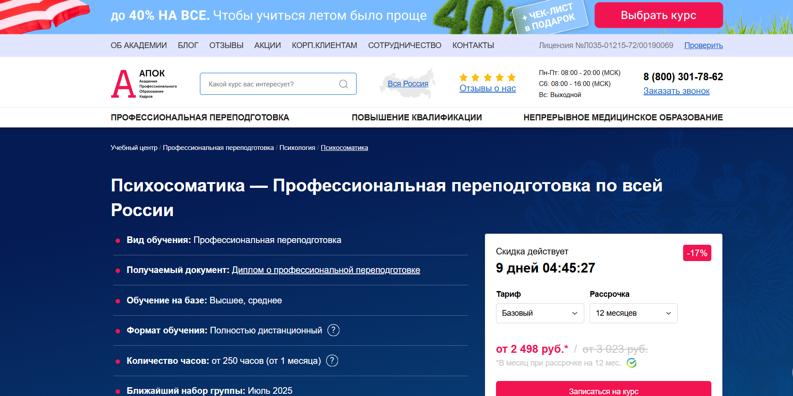
- ✅ Официальный сайт: apokdpo.ru
- 💸 Цена: от 29 980 ₽ (со скидкой — 17%)
- 💳 Рассрочка: от 2 498 ₽/мес., до 12 месяцев, без процентов
- 📚 Формат: дистанционное обучение — видеолекции, методические пособия, тестирование
- ⏳ Продолжительность: от 250 часов (1 месяц)
- 📜 Документ: диплом о профессиональной переподготовке, регистрируется в ФИС ФРДО
- 📝 Трудоустройство: возможность работать в психологических и медицинских центрах, вести частную практику
- 🔷 Для кого подходит курс: для психологов, врачей, педагогов, со средним или высшим образованием
Особенности:
Программа в дистанционном формате охватывает все ключевые аспекты психосоматических расстройств. Студенты получают доступ к системе дистанционного обучения, где проходят теоретическую и практическую подготовку. В курс включены методики телесной терапии, психофизиологии и профессиональной этики. Благодаря гибкому графику, обучаться можно в любом удобном месте. После завершения курсов выдается диплом установленного образца, действующий на территории всей России. Для поступления достаточно предоставить сканы документов. Есть возможность скорректировать учебный план под свои цели, а также ускорить процесс прохождения обучения. Все данные о документах вносятся в государственный реестр.
Чему учатся студенты:
- Применению телесной терапии в работе с психосоматическими симптомами
- Диагностике и коррекции психосоматических расстройств
- Методам релаксации и дыхательной саморегуляции
- Анализу и реконструкции личности
- Управлению вниманием и осознанию телесных реакций
- Психофизиологическим подходам в клинической психологии
Преподаватели:
- Информация о преподавателях на официальном сайте отсутствует
Преимущества:
- Полностью дистанционный формат без необходимости очного присутствия
- Гибкий график обучения, адаптированный под слушателя
- Официальный диплом о профессиональной переподготовке
- Поддержка персонального менеджера и бесплатные пересдачи
- Внесение данных в ФИС ФРДО в течение 1–60 дней (в зависимости от тарифа)
- Бесплатная доставка документов Почтой России
- Скидки до 40% по акциям и для членов семьи
- Возможность получить налоговый вычет 13%
Отзывы учеников:
Слушатели положительно отзываются о доступности дистанционного обучения и структурированности учебных материалов. Многие отмечают профессиональную поддержку менеджеров, быструю доставку документов и возможность пройти курс по индивидуальному графику. Подчёркивается удобный формат прохождения обучения и понятная система тестирования.
Перейти на официальный сайт курса12. Психосоматика — Учебный центр дополнительного профессионального образования ЭКОДПО
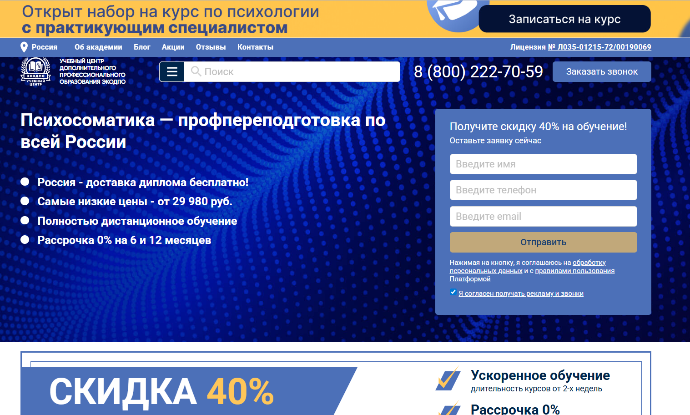
- ✅ Официальный сайт: ecodpo.ru
- 💸 Цена: от 29 980 ₽ (со скидкой 40%).
- 💳 Рассрочка: 0% на 6 и 12 месяцев. Минимальный платеж — от 2 500 ₽/мес.
- 📚 Формат: дистанционный формат обучения, видеолекции, итоговые тесты, индивидуальные занятия, домашние задания.
- ⏳ Продолжительность: от 1,5 до 3 месяцев, от 250 часов.
- 📜 Документ: диплом установленного образца о профессиональной переподготовке. Занесение данных в ФИС ФРДО.
- 📝 Трудоустройство: подходит для работы в психологических центрах, соцслужбах, реабилитационных учреждениях.
- 🔷 Для кого подходит курс: для лиц с высшим или средним профессиональным образованием, планирующих осваивать новые направления в психологии.
Особенности:
Программа проходит полностью в дистанционном формате, что дает возможность получить дополнительное профессиональное образование без отрыва от работы. Обучение проводится на образовательной платформе, где слушатели получают доступ к материалам 24/7. После прохождения курсов предоставляется диплом с юридической силой, признанный по всей России. Для поступления не требуется сдача вступительных экзаменов, а сама программа построена по стандартам профобразования. Переподготовка подходит для клинических психологов и тех, кто хочет сменить сферу деятельности. Доступны готовые и персонализированные учебные планы.
Чему учатся студенты:
- Анализу причин психосоматических симптомов и расстройств
- Применению телесной терапии и психотерапии в практике
- Диагностике и коррекции психосоматических нарушений
- Работе с клиентами с тревожными и пограничными состояниями
- Использованию телесно-ориентированных методов и дыхательных техник
- Применению методов саморегуляции и психокоррекции
- Проведению комплексной психодиагностики и консультированию
Преподаватели:
- Преподаватели — практикующие специалисты в области клинической психологии и психотерапии, участвующие в индивидуальных занятиях и онлайн-разборах кейсов (ФИО не указаны на сайте).
Преимущества:
- Полностью дистанционное обучение с доступом 24/7
- Индивидуальный график прохождения обучения
- Официальный диплом с занесением в ФИС ФРДО
- Бесплатная доставка документов Почтой России
- Возможность пересдачи экзаменов без дополнительной оплаты
- Программа соответствует требованиям закона 273-ФЗ
- Подходит для обучения групп специалистов от организаций
- Гибкость в выборе и корректировке дисциплин (на тарифе «Стандарт» и выше)
Отзывы учеников:
В отзывах чаще всего отмечают простоту поступления, доступный учебный материал и удобство дистанционного формата. Студенты довольны возможностью обучаться без отрыва от работы, а также оперативной поддержкой менеджеров и преподавателей. Многие отмечают быструю доставку дипломов и лояльную систему рассрочки.
Перейти на официальный сайт курса13. Психосоматика и телесная психотерапия – Учебный центр «НЦПО»
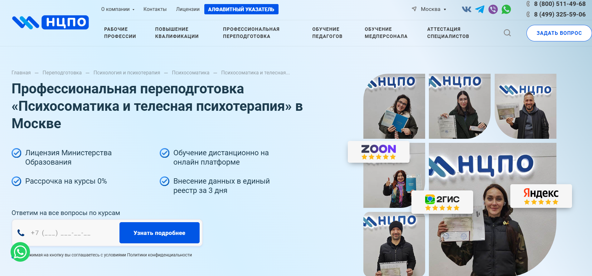- ✅ Официальный сайт: ncpo.ru
- 💸 Цена: от 19 800 ₽ (со скидкой до 3 000 ₽)
- 💳 Рассрочка: 0%, от 1 650 ₽ в месяц
- 📚 Формат: дистанционное обучение, доступ 24/7, видеоуроки, практические задания, тестирование без ограничений
- ⏳ Продолжительность: от 250 до 1600+ академических часов
- 📜 Документ: диплом о профессиональной переподготовке, внесение в ФРДО
- 📝 Трудоустройство: возможность работы в государственных и частных учреждениях, соответствие профстандарту
- 🔷 Для кого подходит курс: для специалистов со средним специальным и высшим образованием, желающих сменить профессию или повысить квалификацию
Особенности:
Программа разработана на основе современных требований к профессиональной деятельности в области психологии и психотерапии. Обучение проходит в дистанционном формате, что делает возможным совмещение с работой и другими занятиями. Студенты получают доступ к учебной платформе с электронными материалами, видеолекциями и заданиями. После окончания курса выдается диплом, подтверждающий квалификацию, с данными, внесёнными в государственный реестр. Доступ к образовательным материалам сохраняется даже после завершения курсов. Оформление проходит быстро — по договору и с официальной гарантией. Курсы актуальны для специалистов, которые ранее проходили профессиональную переподготовку и хотят пройти переаттестацию.
Чему учатся студенты:
- Диагностике психосоматических симптомов и расстройств
- Методам телесной терапии и работе с телесными симптомами
- Анализу психологических причин заболеваний
- Применению методов психотерапии в клинической практике
- Работе с эмоциональными состояниями и стрессами
- Построению терапии при психосоматических проблемах
Преподаватели:
- Терешков Александр Леонидович — генеральный директор УЦ «НЦПО»
- Грезнева Диана — преподаватель, специалист в области телесной психотерапии
- Малкова Анна — куратор программы, опыт в сфере практической психологии
Преимущества:
- Обучение без отрыва от работы — в дистанционном формате
- Внесение данных о дипломе в государственный реестр ФРДО
- Пожизненный доступ к платформе с учебными материалами
- Официальный договор с правовыми гарантиями
- Обучение начинается сразу после оплаты
- Поддержка кураторов и менеджеров на каждом этапе
- Возможность оплатить курс в рассрочку без переплат
- Курс подходит для специалистов без профильного опыта
Отзывы учеников:
Слушатели особенно отмечают удобный формат дистанционного обучения, оперативную поддержку менеджеров, простоту в оформлении и высокую актуальность учебных материалов. Также выделяют быстрое оформление документов и возможность сразу приступить к обучению.
Перейти на официальный сайт курса14. Психосоматика. Практические методы и техники – Московский институт психоанализа
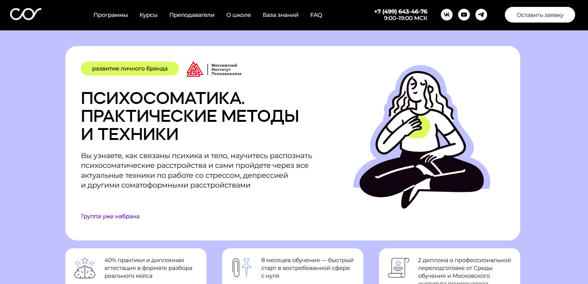
- ✅ Официальный сайт: psychology.sredaobuchenia.ru
- 💸 Цена обучения: по запросу на сайте.
- 💳 Рассрочка: доступна.
- 📚 Формат: дистанционные видеолекции, домашние задания, онлайн-вебинары, кейс-разборы, консультации с преподавателями.
- ⏳ Продолжительность: 8 месяцев.
- 📜 Документ: диплом о профессиональной переподготовке от МИП и Среды обучения.
- 📝 Трудоустройство: помощь с выходом на проверенных работодателей, рекомендации и контакты.
- 🔷 Для кого подходит курс: для психологов, врачей, педагогов и всех, кто хочет изучить природу психосоматических заболеваний и применять знания в практике.
Особенности:
Программа создавалась в партнерстве с Московским институтом психоанализа и полностью соответствует стандартам ФГОС. Обучение проходит в дистанционном формате, что удобно для слушателей из любых регионов. Программа сочетает теоретические знания с отработкой практических техник. Особое внимание уделяется телесной терапии, диагностике, а также клиническим аспектам психосоматических заболеваний. Участники смогут получить не только глубокие знания, но и развить профессиональные навыки. По завершении обучения выдается диплом установленного образца. Школа предоставляет юридическую поддержку, консультации стилиста и готовые шаблоны для запуска частной практики.
Чему учатся студенты:
- Понимать природу психосоматического расстройства и диагностировать его
- Применять методы телесной психотерапии и телесной терапии
- Работать с депрессией, стрессом и посттравматическими состояниями
- Овладевать техниками когнитивно-бихевиоральной терапии
- Использовать психодиагностику в дистанционных курсах
- Работать с запросами клиентов в сфере клинической психологии
- Проводить консультации в онлайн-формате
Преподаватели:
- Ведущий преподаватель: практикующий психотерапевт со стажем более 30 лет
- Кандидат медицинских наук, телесный терапевт, остеопат
Преимущества:
- Обучение в удобном дистанционном формате
- Доступ к учебным материалам и платформе 24/7
- Сильный преподавательский состав с практическим опытом
- Два диплома о профессиональной переподготовке
- Вводный модуль для студентов без психологического образования
- Интерактивные занятия и работа с реальными кейсами
- Юридическая и маркетинговая поддержка после окончания курса
- Шаблоны договоров, презентаций и сайтов для запуска практики
Отзывы учеников:
Слушатели отмечают, что дистанционное обучение помогает совмещать курс с работой и личной жизнью. Отзывы подчеркивают практичность программы, высокую квалификацию преподавателей, поддержку кураторов и реальную пользу полученных знаний. Особенно ценят живые занятия, помощь с запуском личного бренда и возможность получить дипломы сразу от двух учреждений.
Перейти на официальный сайт курса15. Психосоматика и телесная психотерапия – Национальная академия дополнительного профессионального образования
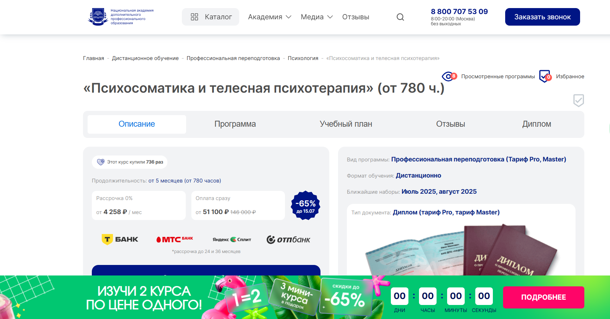
- ✅ Официальный сайт: nadpo.ru
- 💸 Цена обучения: от 51 100 ₽ (скидка 65%, полная стоимость — 146 000 ₽).
- 💳 Рассрочка: от 4 258 ₽ в месяц, доступна на 24 и 36 месяцев, 0%.
- 📚 Формат: дистанционный формат, видеоуроки, практические задания, воркшопы, супервизии, киноклуб, книгоклуб.
- ⏳ Продолжительность: от 5 месяцев (от 780 академических часов).
- 📜 Документ: диплом о профессиональной переподготовке, соответствующий ФГОС.
- 📝 Трудоустройство: предоставляется бесплатный доступ к платформе с реальными клиентами, поддержка карьерного роста, помощь в открытии частной практики.
- 🔷 Для кого подходит курс: для тех, кто хочет освоить новую профессию, расширить профессиональные навыки или получить дополнительное психологическое образование.
Особенности:
Курс организован в дистанционном формате, что даёт возможность изучать материалы в любом удобном месте и графике. Обучение ориентировано на развитие практических навыков работы с психосоматическим симптомом, включает реальные кейсы, групповые супервизии и регулярную обратную связь от преподавателей. Программа соответствует государственным стандартам и после окончания курса слушатели получают диплом о профессиональной переподготовке. Обучение проходит с использованием платформы дистанционного образования, а после завершения курсов участники получают помощь в трудоустройстве. Вся программа построена на методах телесной терапии и современной практической психологии.
Чему учатся студенты:
- Анализировать психосоматическое расстройство и выявлять его причины
- Применять методы телесной психотерапии и дыхательной саморегуляции
- Проводить диагностику психосоматических состояний
- Работать с телесными симптомами в рамках терапии
- Использовать техники экстренной релаксации
- Развивать профессиональный уровень в дистанционном обучении
Преподаватели:
- Тарасов Сергей Васильевич — кандидат психологических наук, доцент, стаж с 2000 года
- Егорова Наталья Николаевна — кандидат психологических наук, стаж 22 года
- Челнокова Ирина Александровна — кандидат психологических наук, член Российской ассоциации КПТ
- Санжапова Эльмира Викторовна — кандидат педагогических наук, доцент, стаж с 2005 года
Преимущества:
- Более 30% программы занимает практика
- Обучение в дистанционном формате с поддержкой преподавателей
- Доступ к электронным библиотекам ЛитРес и БиблиоКлуб
- Возможность начать частную практику сразу после окончания обучения
- Бесплатный доступ к платформе для получения клиентов
- Психосоматика и телесная терапия под руководством практикующих специалистов
- Поддержка по трудоустройству и развитию карьеры
- Кешбэк 2555 баллов при оплате обучения
Отзывы учеников:
Выпускники отмечают высокий уровень преподавателей и качественную практическую подготовку. Многие подчёркивают, что дистанционные курсы дали им уверенность в работе с клиентами, а после прохождения обучения удалось быстро найти первых клиентов благодаря платформе.
Перейти на официальный сайт курса16. Психосоматические расстройства функциональных систем организма у взрослых: клиника, диагностика, психотерапевтическая помощь — Национальный институт дополнительного и дистанционного профессионального образования
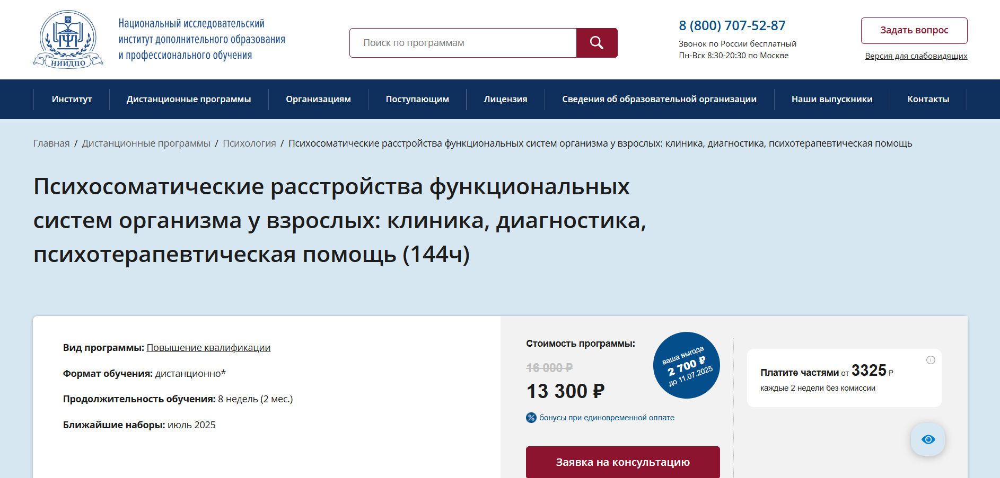- ✅ Официальный сайт: niidpo.ru
- 💸 Цена: 13 300 ₽ (скидка, полная стоимость — 16 000 ₽)
- 💳 Рассрочка: 4 платежа по 3 325 ₽ без комиссии
- 📚 Формат: дистанционный формат: лекции (видео и текст), тестирование, задания, вебинары, доступ через мобильное приложение
- ⏳ Продолжительность: 8 недель (144 академических часа)
- 📜 Документ: удостоверение о повышении квалификации государственного образца
- 📝 Трудоустройство: подходит для повышения профессионального уровня и применения в практике, особенно в сфере клинической психологии и психотерапии
- 🔷 Для кого подходит курс: для клинических психологов, врачей-психотерапевтов, медицинских работников, желающих изучить психосоматическое направление
Особенности:
Курс выстроен в дистанционном формате, что делает его удобным для занятых специалистов. Обучение проходит через современную платформу и мобильное приложение, что позволяет проходить обучение в любом удобном месте. Доступ к учебным материалам сохраняется бессрочно после завершения курса. Предусмотрены задания с обратной связью от экспертов, регулярные вебинары и итоговая аттестация в тестовой форме. Студенты получают теоретическую и практическую базу по лечению психосоматических заболеваний. Программа включает дополнительные бонусы — архив из более чем 13 000 вебинаров и участие в супервизиях. Слушатели получают доступ к профессиональному сообществу и образовательным ресурсам.
Чему учатся студенты:
- Анализировать причины психосоматических расстройств у взрослых
- Оценивать влияние стресса на физическое здоровье
- Применять методы психосоматической диагностики
- Проводить комплексную телесную психотерапию
- Осваивать методы психотерапии с учетом характера расстройства
- Определять психологические причины телесных симптомов
- Работать с пациентами на уровне индивидуального психического состояния
Преподаватели:
- Губарева Наталия Владимировна — практикующий медицинский психолог, специалист по зависимому поведению, семейной и индивидуальной терапии
Преимущества:
- Полностью дистанционное обучение с доступом через мобильное приложение
- Бессрочный доступ к материалам курса после завершения
- Скидка 2 700 ₽ при оплате до 11 июля
- Более 13 000 записей вебинаров включены в стоимость
- Платежи без процентов и комиссий
- Курс подходит для действующих специалистов с профессиональным образованием
- Возможность участия в супервизиях с анализом реальных кейсов
- Обучение проводится квалифицированными практиками
Отзывы учеников:
Слушатели чаще всего отмечают удобный дистанционный формат, актуальные материалы, поддержку кураторов и полезность вебинаров. Высоко оценивается возможность бессрочного доступа к лекциям и качество обратной связи от преподавателей.
Перейти на официальный сайт курса17. Психосоматика и телесная терапия – Институт психологии и социального образования

- ✅ Официальный сайт: inpsycho.ru
- 💸 Цена обучения: 50 000 ₽
- 💳 Рассрочка: предоставляется по запросу
- 📚 Формат: дистанционный формат — электронное обучение, видеолекции, итоговая аттестация
- ⏳ Продолжительность: 3 месяца
- 📜 Документ: диплом о профессиональной переподготовке установленного образца
- 📝 Трудоустройство: помогает подтвердить квалификацию в сфере клинической психологии
- 🔷 Для кого подходит курс: для психологов, педагогов, медиков, социальных работников, а также всех, кто стремится освоить телесную терапию и работать с психосоматическими симптомами
Особенности:
Программа реализуется в дистанционном формате с полным доступом к учебным материалам. В рамках курса слушатели изучают методы психотерапии, направленные на лечение психосоматических расстройств и заболеваний. Курс подойдет тем, кто хочет пройти профессиональную переподготовку и получить диплом, подтверждающий новый уровень компетенций. Обучение проходит онлайн, что дает возможность учиться в любом удобном графике. По завершении обучения выдается документ, который позволяет работать в области психосоматической терапии. Уделяется внимание не только теоретическому материалу, но и практическим навыкам телесной психотерапии. Курс отвечает современным требованиям профессионального образования. Студенты изучают подходы, направленные на выявление и устранение психологических причин телесных симптомов.
Чему учатся студенты:
- Диагностике и терапии психосоматических заболеваний
- Методам телесной терапии и практической психологии
- Работе с психосоматическими симптомами через телесную психотерапию
- Анализу психологических причин заболеваний
- Применению современных методов в психотерапевтической практике
Преподаватели:
- Гордеева Галина Анатольевна — кандидат психологических наук, доцент, клинический психолог, автор программ по телесной терапии
- Дьяченко Александр Юрьевич — доктор медицинских наук, профессор, специалист в области психосоматических расстройств
- Владимирова Наталья Сергеевна — практикующий психолог, сертифицированный телесно-ориентированный терапевт
Преимущества:
- Официальный диплом о профессиональной переподготовке
- Доступ к платформе с материалами в любое время
- Практико-ориентированный подход к обучению
- Развитие профессиональных навыков в сфере психотерапии
- Обучение в удобном дистанционном формате
- Поддержка преподавателей на всех этапах обучения
- Изучение современных методов диагностики и терапии
Отзывы учеников:
Слушатели курса отмечают простоту доступа к платформе, понятную структуру образовательных модулей и актуальность теоретических и практических знаний. Многие подчеркивают ценность дистанционного обучения и возможность получить диплом без отрыва от работы. Часто упоминаются профессионализм преподавателей и внимание к студентам.
Перейти на официальный сайт курса18. Психотерапия психосоматических расстройств – Институт Современных Психологических Технологий
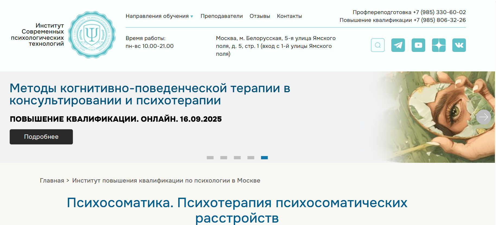
- ✅ Официальный сайт: paracels.ru
- 💸 Цена: 39 000 ₽ (при оплате заранее — 36 300 ₽).
- 💳 Рассрочка: нет данных.
- 📚 Формат: дистанционный формат, лекции, практические занятия, задания на отработку техник.
- ⏳ Продолжительность: 5 недель, 76 академических часов.
- 📜 Документ: диплом о профессиональной переподготовке.
- 📝 Трудоустройство: предоставляется скидка на тренинги для выпускников, расширение профессиональных навыков.
- 🔷 Для кого подходит курс: для специалистов в сфере психологии, психотерапии, медицины, а также всех, кто хочет освоить телесную терапию и методы коррекции психосоматических состояний.
Особенности:
Курс разработан с акцентом на дистанционное обучение и направлен на освоение практических методов терапии при психосоматических расстройствах. Обучение проходит один раз в неделю, что удобно для совмещения с работой. Студенты получают доступ к современным подходам в диагностике и коррекции заболеваний, связанных с подавленными эмоциями. Курс помогает овладеть телесной психотерапией, включает работу с мышечными блоками и стрессовыми состояниями. Образовательный процесс построен на сочетании теоретических и практических знаний, что способствует эффективному усвоению материала. Обучение доступно слушателям по всей стране в дистанционном формате, а после завершения курса выдается диплом. Программа дополнительно предоставляет скидки на тренинги выпускникам.
Чему учатся студенты:
- Понимать природу психосоматического симптома
- Диагностировать и корректировать психосоматическое расстройство
- Работать с телесными симптомами через методы телесной терапии
- Осваивать стратегии стрессоустойчивости и саморегуляции
- Применять современные методы психотерапии в индивидуальной работе с клиентами
Преподаватели:
- Власенкова И. Н. — преподаватель курса, специалист в области психотерапии и психосоматики
Преимущества:
- Дистанционное обучение в удобном формате
- Выдается диплом о профессиональной переподготовке
- Глубокая проработка психосоматических заболеваний и симптомов
- Освоение телесно-ориентированной терапии и эмоционально-образных методов
- Возможность применять полученные навыки сразу после окончания курса
- Скидки на дополнительные тренинги для выпускников
- Подходит для расширения профессионального уровня и получения новой специальности
Отзывы учеников:
Слушатели хвалят курс за насыщенность практическими заданиями и доступное объяснение сложных тем. Многие отмечают, что обучение помогло в переходе на новый профессиональный уровень. Преподавание вызывает доверие, а структура курса способствует глубокому погружению в тему психосоматических расстройств.
Перейти на официальный сайт курса19. Практическая психосоматика – Институт психосоматики и трансформационных методов
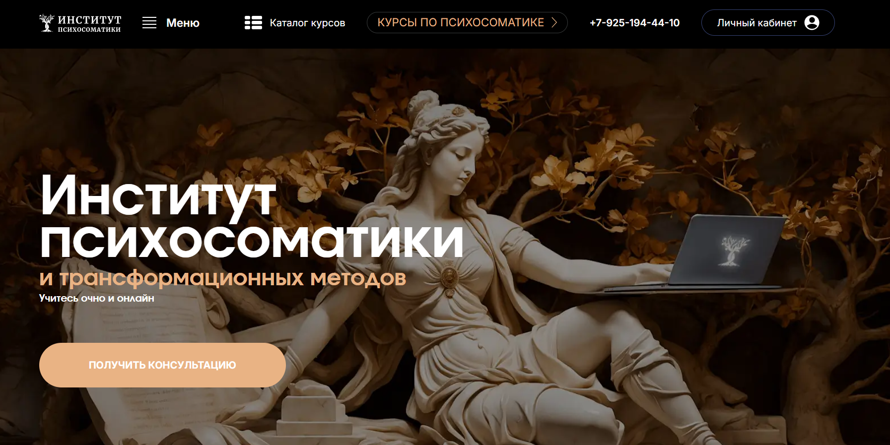
- ✅ Официальный сайт: psy-university.com
- 💸 Цена обучения: индивидуально по запросу, от 570 000₽
- 💳 Рассрочка: доступна частями, без привлечения банков, от 63 333₽ за платеж
- 📚 Формат: дистанционный формат, очные занятия, лекции, учебные разборы, доступ к закрытому чату
- ⏳ Продолжительность: 9 месяцев (с 20 сентября 2025 по 26 апреля 2026 года)
- 📜 Документ: диплом установленного образца о профессиональной переподготовке
- 📝 Трудоустройство: возможность попасть в команду специалистов института
- 🔷 Для кого подходит курс: для психологов, врачей, студентов психологических вузов, а также всех, кто интересуется психосоматическими расстройствами и хочет освоить методы психотерапии в дистанционном формате
Особенности:
Курс выстроен так, чтобы участники могли получать профессиональное образование в дистанционном формате без отрыва от основной деятельности. Он сочетает теоретический материал и практические занятия по телесной терапии, что делает обучение результативным и понятным даже тем, кто впервые сталкивается с психосоматическими заболеваниями. В рамках образовательной программы студенты изучают клиническую психологию и телесную психотерапию с применением современных методов диагностики и терапии. Завершение курса сопровождается получением диплома о профессиональной переподготовке, включенного в Федеральный реестр документов об образовании. Уникальной возможностью является стажировка в онлайн-центре и доступ к профессиональному сообществу. Студенты получают поддержку от менторов и преподавателей, что делает прохождение обучения максимально комфортным.
Чему учатся студенты:
- Применению телесной терапии и методов психотерапии при психосоматических расстройствах
- Анализу и диагностике психосоматических симптомов
- Работе с клиентом в рамках дистанционного образовательного процесса
- Пониманию причин заболеваний через психоэмоциональные процессы
- Развитию профессиональных навыков для работы в сфере психосоматики
Преподаватели:
- Артём Олегович Толоконин — кандидат медицинских наук, психосоматолог, семейный психотерапевт, автор методики Биоэнергосоматика
- Александра Александровна Толоконина — практикующий психолог, телесно-ориентированный терапевт, гипнотерапевт
- Александр Михайлович Краснов — семейный психолог, гипнолог, сексолог
- Игорь Юрьевич Капитонов — член NGH, практикующий психолог, сертифицированный гипнолог
Преимущества:
- До 80% практических занятий в дистанционном обучении
- Доступ к учебным материалам и закрытым чатам на 9 месяцев
- Профессиональная переподготовка с дипломом государственного образца
- Стажировка в онлайн-центре института
- Помощь в трудоустройстве лучших выпускников
- Возможность работать с клиентами уже во время прохождения курса
- Поддержка от менторов и преподавателей в образовательном процессе
- Удобный график обучения без привязки к месту проживания
Отзывы учеников:
Слушатели подчеркивают высокую вовлеченность преподавателей и доступный формат дистанционного обучения. Отмечают пользу от практических занятий, обратной связи и возможности применить знания в своей профессиональной практике сразу после окончания обучения. Многие выделяют улучшение здоровья и общего состояния благодаря освоенным техникам.
Перейти на официальный сайт курсаКто такой специалист по психосоматике?
Специалист по психосоматике — это профессионал, который изучает и помогает устранять связь между психоэмоциональным состоянием человека и его физическим здоровьем. Такие эксперты работают на стыке медицины, психологии и психотерапии. Основная задача — выявить психологические причины заболеваний и помочь пациенту избавиться от внутренних конфликтов, влияющих на организм.
Что делают психосоматологи и чем занимаются?
Работа психосоматолога включает диагностику, консультирование и сопровождение клиента. Такой специалист помогает пациенту понять, какие эмоции, травмы или стрессовые события могли стать причиной болезни. Часто заболевания, связанные с психосоматикой, включают:
- хронические боли (головные, в спине, шее);
- заболевания ЖКТ (гастриты, синдром раздраженного кишечника);
- кожные заболевания (псориаз, экзема);
- сердечно-сосудистые расстройства;
- астма и другие нарушения дыхания.
Специалист по психосоматике помогает не просто «снять симптомы», а разобраться в глубинных причинах болезни, трансформировать поведение и мышление клиента, чтобы улучшить его общее здоровье.
Что должен знать и уметь специалист по психосоматике?
Чтобы эффективно работать, специалист должен обладать обширными знаниями и практическими навыками:
- основы анатомии и физиологии человека;
- базовая и клиническая психология;
- методы психотерапии (гештальт-терапия, когнитивно-поведенческая терапия и др.);
- психосоматическая диагностика и работа с психотравмами;
- навыки консультирования и ведения клиентов;
- умение работать в мультидисциплинарной команде с врачами и психотерапевтами.
Также специалист должен быть эмоционально устойчивым, эмпатичным, способным выстраивать доверительные отношения с пациентами и сохранять этические нормы.
Востребованность и зарплаты психосоматологов в России в 2025 году
С каждым годом интерес к психосоматике в России растет. Современные пациенты всё чаще ищут причины своих заболеваний не только в физиологии, но и в психоэмоциональной сфере. В 2025 году специалисты по психосоматике особенно востребованы в:
- частных психологических и психотерапевтических центрах;
- реабилитационных клиниках;
- медицинских учреждениях с интегративным подходом;
- работе в частной практике и онлайн-консультировании.
Средняя зарплата специалиста по психосоматике в 2025 году составляет:
- в регионах — от 60 000 до 100 000 рублей в месяц;
- в Москве и Санкт-Петербурге — от 100 000 до 200 000 рублей и выше;
- в частной практике — доход может превышать 300 000 рублей в месяц в зависимости от количества клиентов и репутации специалиста.
Как стать психосоматологом и где учиться?
Для того чтобы стать психосоматологом, необходимо пройти профильное образование и практическую подготовку. Основные этапы:
- Получить высшее образование по психологии, медицине или психотерапии;
- Пройти дополнительное обучение по психосоматике — в вузе, на курсах повышения квалификации или в специализированных институтах;
- Регулярно проходить супервизии и участвовать в профессиональных конференциях;
- Развивать практические навыки и работать с реальными клиентами.
Какими качествами должен обладать хороший психосоматолог?
Психосоматика — это не только знания, но и внутренние качества специалиста. Хороший психосоматолог обладает следующими чертами:
- высокий уровень эмпатии и эмоционального интеллекта;
- способность выстраивать безопасное пространство для клиента;
- гибкость мышления и отсутствие догматичности;
- желание постоянно учиться и развиваться;
- навыки работы с травмами, тревожными расстройствами и телесными симптомами.
Перспективы развития профессии
В будущем ожидается усиление интеграции психосоматического подхода в официальную медицину. Все больше клиник и медицинских учреждений включают психологов и психосоматологов в штат. Также развивается направление онлайн-психотерапии, что расширяет возможности заработка и работы с клиентами по всему миру.
По мере осознания обществом роли ментального здоровья, профессия психосоматолога будет только расти в значимости и доходности.
Что такое психосоматика и зачем нужно обучение в этой сфере?
Психосоматика — это направление, изучающее связь между психологическим состоянием человека и его телесными симптомами или психосоматическими заболеваниями. Обучение в этой сфере необходимо тем, кто хочет помогать клиенту находить психологические причины болезней, а также освоить современные методы психотерапии и телесной терапии.
Какие программы профессиональной переподготовки доступны по психосоматике?
В дистанционном формате предлагаются программы дополнительного профессионального образования по направлениям психосоматика, практическая психология, телесная терапия и психосоматическое консультирование. Такие курсы позволяют получить дополнительную квалификацию и углубленные знания в области лечения психосоматических расстройств.
Что включает курс обучения по психосоматике?
Программа дистанционного обучения включает основы психосоматики, методы диагностики психосоматических заболеваний, телесно-ориентированные практики, а также техники работы с психосоматическим симптомом. Процесс обучения строится на сочетании теоретических знаний и практических занятий.
Кому подойдет дистанционное обучение?
Дистанционные курсы подходят психологам, врачам, педагогам, коучам и другим специалистам, желающим повысить профессиональный уровень и развить практические навыки в области психосоматических заболеваний.
Можно ли пройти профессиональную переподготовку онлайн?
Да, профессиональная переподготовка по психосоматике доступна в дистанционном формате с использованием электронного обучения. Обучение проходит через систему дистанционного образования, с доступом к учебным материалам в любом удобном формате.
Какие знания получают психосоматологи?
Слушатели получают глубокие знания о развитии психосоматического симптома, причинах заболеваний, подходах к диагностике и методах лечения. Они также освоят методы работы с эмоциями, стрессами и внутренними конфликтами.
Выдается ли диплом после завершения курсов?
После завершения обучения выдается диплом установленного образца о профессиональной переподготовке или повышении квалификации, который подтверждает профессиональные навыки и дает право на ведение деятельности в новой сфере.
Сколько длится дистанционное обучение психосоматике?
Продолжительность зависит от формата обучения и выбранной программы. В среднем, прохождение обучения занимает от 3 до 9 месяцев. Процессу обучения можно уделять время в любом удобном графике.
Какая стоимость обучения?
Стоимость курса зависит от учебного центра, программы обучения и продолжительности. Обычно стоимость обучения варьируется от 15 000 до 60 000 рублей. Многие институты психологии предлагают рассрочку и скидки.
Что входит в учебные материалы дистанционных курсов?
Учебные материалы включают лекции, видеозаписи занятий, презентации, практические задания и тесты. В ряде программ предусмотрены вебинары и индивидуальные консультации с преподавателями.
Кто преподает на курсах по психосоматике?
Программы ведут клинические психологи, специалисты в области психотерапии, преподаватели институтов психологии и практикующие телесные терапевты, обладающие богатым практическим опытом.
Можно ли получить доступ к обучающим материалам после окончания курса?
Да, в большинстве случаев слушателям предоставляется доступ к электронным учебным материалам и записям лекций даже после окончания курса, что позволяет повторно изучать темы и освежать знания.
Какие методы психотерапии изучают в курсе по психосоматике?
Программа включает современные методы психотерапии: телесную психотерапию, гештальт-подход, когнитивно-поведенческую терапию, психоанализ и эмоционально-образную терапию. Все методы направлены на помощь клиенту в выявлении и проработке психологических причин заболеваний.
Чему учат по телесной терапии?
В рамках курса уделяется внимание телесной терапии как ключевому элементу лечения психосоматических расстройств. Участники изучают работу с телесными зажимами, эмоциями, двигательной активностью и телесными симптомами.
Как проходит итоговая аттестация после окончания курса?
Завершение курсов сопровождается итоговым тестированием или написанием квалификационной работы. После успешного прохождения курсов слушатель получает диплом, подтверждающий дополнительное профессиональное образование.
Можно ли применять знания после обучения в частной практике?
Да, после прохождения обучения выпускники могут вести частную практику в области консультирования по психосоматическим проблемам, психотерапии психосоматических расстройств и телесной терапии.
Какие преимущества дает дистанционный формат обучения психосоматике?
Дистанционный формат позволяет обучаться в любом удобном месте, совмещать учебный процесс с работой, использовать электронные учебные материалы и обучаться в своем темпе. Это удобная и доступная форма получения дополнительного образования.
------------------------------------------------
Реклама. Информация о рекламодателе по ссылкам в статье.